CS 184: Computer Graphics and Imaging, Spring 2024
Project 3-1: Path Tracer
Xiaoyu Zhu🐷 and Jian Yu🐟
Website URL: Web
Overview
The project begins with the basics of ray generation and scene intersection, which include generating rays per pixel and efficiently detecting intersections with primitives like triangles and spheres. Then we focuses on enhancing rendering efficiency through the Bounding Volume Hierarchy (BVH) construction, optimizing the process by minimizing unnecessary ray-primitive intersection tests. After that, we delve into direct illumination, comparing uniform hemisphere sampling against importance sampling, and demonstrating the advantages of the latter in reducing noise and improving shadow accuracy. We also integrate global illumination, capturing the subtleties of indirect lighting and the beautiful complexities it introduces to the rendered scenes. Through adaptive sampling, we fine-tune their path tracer to allocate computational resources dynamically, striking a balance between image quality and rendering speed. This technique proves crucial for handling scenes with varying degrees of complexity, ensuring that more samples are used in areas with higher variance to reduce noise effectively.
Part 1: Ray Generation and Scene Intersection (20 Points)
Ray generation and primitive intersection parts of the rendering pipeline:
To render color for each pixel (x, y) on the image, we first use gridSampler->get_sample() to generate ns_aa sample points for it. Then, we use the generate_ray function to cast a ray for each sample point, which begins at the camera position and goes through the sample point. After that, we use the est_radiance_global_illumination function to calculate the illumination along the ray. This includes calling bch->intersect to traverse all primitives in the scene and test whether they intersect with the ray within the valid range. If they do, we use normal shading to determine the color for this sample point; otherwise, we return the environmental light. By repeating this process for every sample point and averaging the results, we can determine the color that should be drawn for this pixel. After traversing every pixel on the image plane, we can finally render the entire image."
Triangle intersection algorithm
The triangle intersection algorithm determines if a ray intersects with a triangle by setting up and solving a linear system that models the intersection. Specifically, we follow the solution in discussion as below:
Solution: Since the intersection is both along the ray and on the triangle, we have
Thus,
Writing it in matrix form, we have
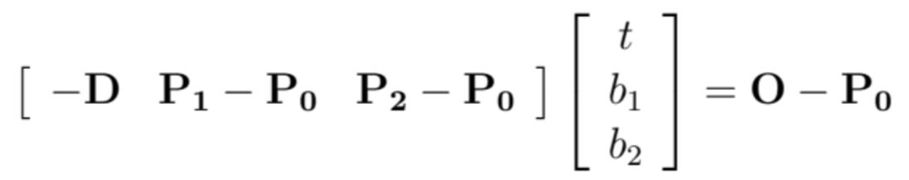
So,
So we construct vectors from the triangle's vertices and the ray's direction and origin, and use these to form a matrix equation. Solving this equation provides values for t (the distance along the ray to the intersection), and barycentric coordinates beta and gamma. The algorithm checks if t falls within the ray's bounds and if beta and gamma indicate that the intersection is inside the triangle.
For intersections, the algorithm updates either the ray's maximum extent or the intersection data with the distance, the intersecting object, material information, and a normalized normal vector calculated from the triangle's vertex normals, ensuring the intersection point lies within the triangle and facilitating subsequent rendering calculations.
Sphere intersection algorithm:
We use a geometric approach to detect whether a ray intersects with a sphere. It begins by calculating the coefficients of a quadratic equation (a, b, c) related to the direction of the ray and the vector from the sphere's center to the ray's origin. Then, it uses these coefficients to compute the discriminant, which determines if the ray intersects the sphere. If the discriminant is negative, the ray does not intersect the sphere. If the discriminant is non-negative, the algorithm calculates the distance t1, which is the length from the ray's origin to the intersection point. Lastly, we checks if this intersection point is within the valid range of the ray (comparing t1 with the ray's minimum and maximum ranges).
For the intersection detection function, it returns true if the ray intersects the sphere; for the function computing intersection details, it updates detailed information about the intersection, including the position of the intersection point, the normal vector at the intersection, and material information, which are essential for subsequent rendering processes.
Show images:
 |  |
|---|---|
 | 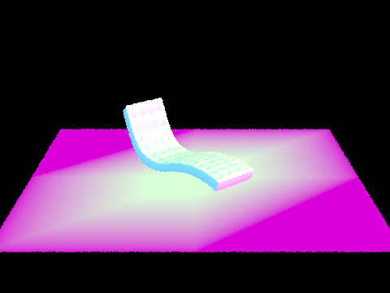 |
Part 2: Bounding Volume Hierarchy
Walk through your BVH construction algorithm. Explain the heuristic you chose for picking the splitting point.
Algorithm Overview:
The function construct_bvh builds the BVH by recursively dividing the set of primitives into smaller subsets until the size of a subset is less than or equal to a specified maximum leaf size. Initially, it checks if the current set of primitives is small enough to fit into a leaf node. If so, it creates a leaf node that encompasses all these primitives within a bounding box. If the set is too large, it calculates the overall bounding box for the current set and determines the longest axis of the box. The set of primitives is then sorted along this axis based on the centroids of their bounding boxes. This sorted set is split into two halves, and the function recursively calls itself for each half, creating a new node in the BVH for each subset. Each node stores pointers to its left and right children, effectively dividing the primitives into a hierarchical structure of nested bounding boxes.
Heuristic function:
In this method, the heuristic is based on the spatial distribution of the primitives' centroids. By identifying the longest axis of the overall bounding box, the algorithm chooses an axis along which the primitives are most spread out. This approach aims to create a more balanced tree by ensuring that each recursive split divides the primitives into groups with roughly equal numbers and minimizes the overlap between bounding boxes of child nodes. The decision to sort the primitives based on their centroids' positions along the chosen axis and then splitting the sorted list into two halves is a simple yet effective heuristic that balances the tree and potentially reduces the number of bounding box intersection tests needed during ray tracing.
Show images:
| 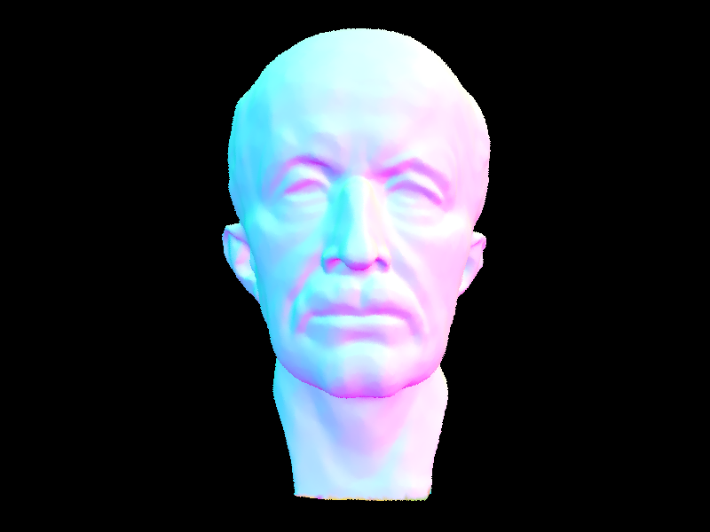 | 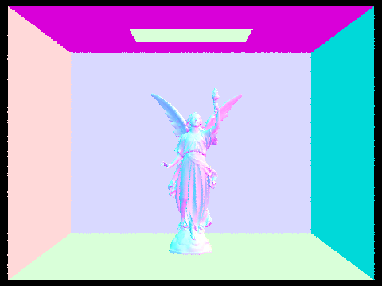 |
|---|---|
| 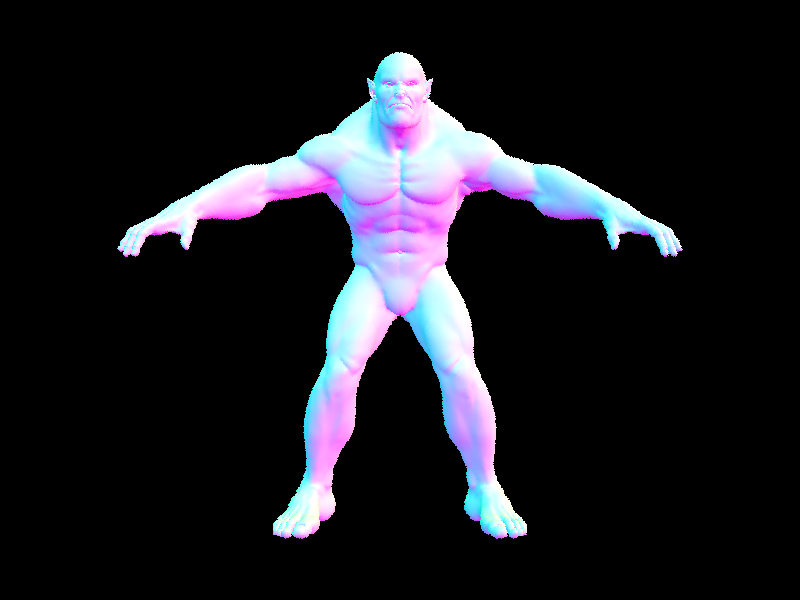 |  |
Comparison on rendering times
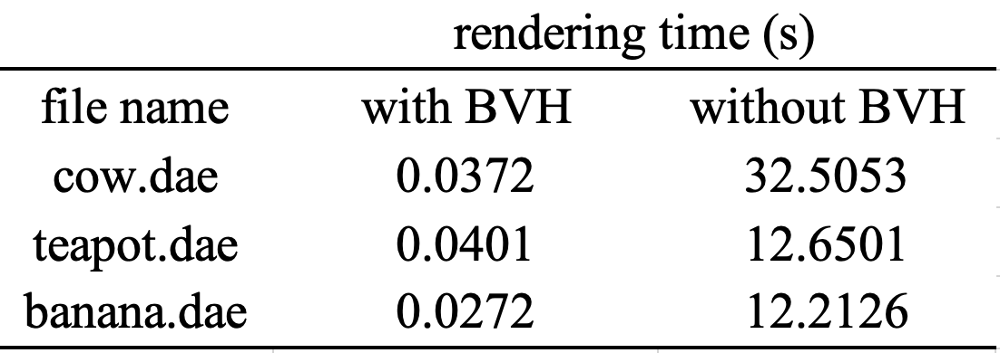
The drastic difference in rendering times clearly demonstrates the effectiveness of BVH acceleration in reducing the time required to render moderately complex geometries. Taking cow.dae as an example, we have to test about 1710 times for intersection for each ray, while using BVH the number decents to 3, because if the ray miss the bounding box, we can avoid further intersection test for object in them. In summary, BVH greatly optimizes the process by efficiently organizing the geometric data, which reduces the number of calculations needed to determine ray-primitive intersections.
Part 3: Direct Illumination
Walk through both implementations of the direct lighting function.
Implemention of Uniform Hemisphere Sampling
The estimate_direct_lighting_hemisphere function in the path tracing implementation estimates the direct light hitting an intersection point by uniformly sampling directions over the hemisphere oriented by the surface normal. The steps are as follows:
Construct a local coordinate system at the intersection point, aligned with the normal.
Transform the incoming ray to this local coordinate system.
Loop over a number of samples, generating uniform directions over the hemisphere.
Vector3D w_in = hemisphereSampler->get_sample();For each sample, transform the direction back to world space and shoot a shadow ray towards the light.
xxxxxxxxxxVector3D wi = o2w * w_in;Ray out_ray = Ray(hit_p, wi);out_ray.min_t = EPS_D;If the shadow ray hits a light source, calculate the light's contribution to the intersection point, considering the material's properties and the angle between the incoming light direction and the surface normal.
xxxxxxxxxxIntersection out_isect;if (bvh->intersect(out_ray, &out_isect)){if (out_isect.bsdf->get_emission().norm() > 0){L_out_sum += out_isect.bsdf->get_emission() * isect.bsdf->f(w_out, w_in) * dot(wi, isect.n) * 2 * PI / num_samples;}}Accumulate the contributions for each sample to approximate the total direct lighting.
Implemention of Importance Sampling
The estimate_direct_lighting_importance function computes the direct lighting at an intersection point by importance sampling from light sources, rather than sampling uniformly over a hemisphere.
A coordinate system is established at the intersection point with the normal (
isect.n) aligned with the Z-axis.The incoming ray (
r) is transformed to this local coordinate system to determine the outgoing direction (w_out) at the intersection point.The function iterates over each light source in the scene.
For delta lights, a single sample is taken because these lights are treated as point sources with no area. The light's contribution is calculated if the shadow ray from the intersection point to the light does not hit any other geometry.
if (light->is_delta_light() == true){Vector3D radians = light->sample_L(hit_p, &wi, &distToLight, &pdf);Vector3D w_in = w2o * (wi);Ray shadowRay(hit_p, wi, distToLight - EPS_F);shadowRay.min_t = EPS_F;Intersection shadowIsect; // 计算交点bool intersects = bvh->intersect(shadowRay, &shadowIsect);if (!intersects){Vector3D f = isect.bsdf->f(w_out, w_in);L_out_sum += f * radians * dot(wi, isect.n) / pdf;}}For area lights, the only difference is that we shoule sample multiple times for per light source.
For every unobstructed light sample, the function calculates the lighting contribution based on the light's radiance, the surface's material properties (BSDF), the cosine of the angle between the incoming light direction and the normal, and the inverse of the probability density function (
pdf) of the sample.Contributions from all the unblocked samples are accumulated to estimate the total direct lighting (
L_out_sum).
Show some images with both rendering methods:
| Uniform Hemisphere Sampling | Light Sampling |
|---|---|
| 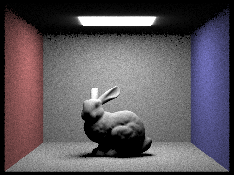bunny.dae | bunny.dae |
| 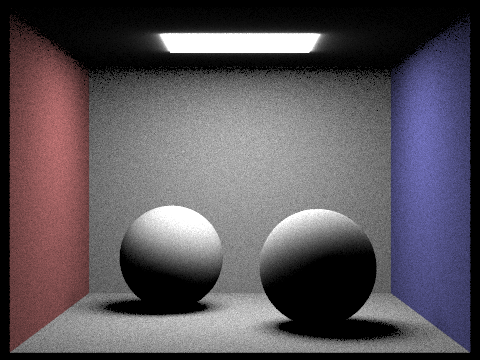CBspheres_lambertian.dae | 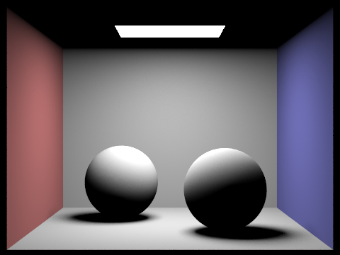CBspheres_lambertian.dae |
one particular scene with different light rays using light sampling:
| 1 Light Ray (example1.dae) | 4 Light Rays (example1.dae) |
|---|---|
| 16 Light Rays (example1.dae) | 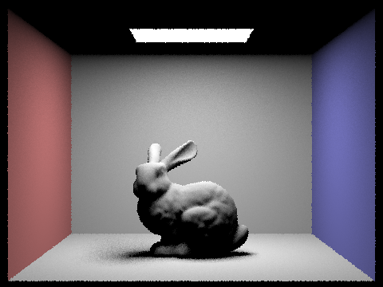64 Light Rays (example1.dae) |
Analysis:
the number of light rays sampled per pixel (-l flag) greatly influences the noise level and smoothness of soft shadows. With only one light ray per pixel (-l 1), shadows tend to be noisy and exhibit stark contrasts because the single sample provides a limited and potentially unrepresentative estimation of the actual light distribution. As the number of rays increases to 4, 16, and then 64, each pixel receives a more statistically robust estimation of lighting, which averages out inconsistencies and reduces noise. Consequently, soft shadows transition more smoothly between light and dark regions, simulating the effect of light diffusing across the edges of objects. This smoothing effect occurs because increasing the ray count leads to a better approximation of the light's area and intensity variations, offering a more realistic representation of how light interacts with surfaces in the scene.
Compare the results between two sampling method
Uniform hemisphere sampling distributes rays evenly across the hemisphere above the intersection point, often leading to higher noise levels, especially in shadowed or indirectly lit areas, because many sampled rays may not contribute significant lighting information. In contrast, importance sampling focuses rays towards the light sources, taking into account their size, shape, and intensity distribution. This approach tends to produce images with lower noise and more accurate soft shadows, as the samples are more likely to represent meaningful light contributions. While uniform sampling is simpler and may be more efficient for scenes with diffuse lighting from many directions, importance sampling is generally preferred for scenes with distinct light sources, as it provides a better approximation of how light actually illuminates the scene.
Part 4: Global Illumination
Implementation of the indirect lighting function:
at_least_one_bounce:
In this function, we only trace ray bounce ray.depth times, without regarding whether isAccu
Setting Up Coordinate Systems
Computing Intersection Point and Outgoing Direction (like what we do in task3)
Base case: if max depth =1 or current depth for the ray we are tracing is 1, we should return one bounce radiance using direct illumination function implemented in task3.
xxxxxxxxxxif (max_ray_depth == 1 || r.depth == 1){return one_bounce_radiance(r, isect);}Recursion:
For each intersection, sample ns_diff times to estimate income radiance. With rassian roulette turned on, we first flip a coin when r.depth != max_ray_depth, as we want to use this check to make sure each ray will bounce at least once before disappear. So we will cast a new ray with ray.depth equals to ole depth-1 with 75% chances, then test whether it will intersect with any primitives in the scene, if so, return:
xxxxxxxxxxL_out = (1/0.75)*f * at_least_one_bounce_radiance(ray, new_isect) * dot(o2w * w_in, isect.n) / (ns_diff * pdf);Else we will just return Vector3D(0, 0, 0), which stop tracing and return black.
est_radiance_global_illumination
Initialize variables:
isectto store intersection information andL_outto store the outgoing radiance, initially set to black.Check if the incoming ray intersects with any geometry in the scene using a Bounding Volume Hierarchy (BVH). If there's no intersection, return the radiance sampled from the environment light if available, otherwise return black.
If intersections are found: a. If the option to accumulate bounces is enabled (
xxxxxxxxxxisAccumBounces), compute radiance contributions from zero bounce and at least one bounce scenarios for multiple depths (
xxxxxxxxxxmax_ray_depth). This considers direct and indirect illumination. b. If not accumulating bounces, handle radiance computation based on the depth of the ray:
For rays at depth 1, compute radiance contributions from zero bounce and one bounce scenarios.
For rays at depth 0, compute radiance contribution only from zero bounce.
For other depths, compute radiance contribution from at least one bounce.
Return the computed radiance
L_out.
Some images rendered with global illumination.
| 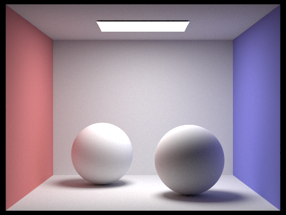CBspheres_lambertian.dae | CBbunny.dae |
|---|---|
Comparison between only direct and only indirect illumination.
| Only direct illumination | 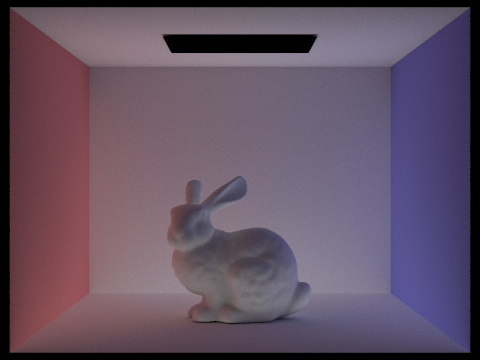Only indirect illumination |
|---|---|
In the realm of direct illumination, the visuals we perceive are shaped by the original light emission and its singular interactions with the scene—no subsequent bounces of light are accounted for. This yields a visual composition with starkly defined shadows and distinct contrast, given that illumination is confined to surfaces with unobstructed paths to the light source, leaving other areas shrouded in darkness. Turning to indirect illumination,the focus shifts to the subsequent journey of light as it reflects within the environment. With indirect illumination, the bunny can reflect colors of two walls and the ceiling become brighter because of the bouncing rays.
Render the mth bounce of light with max_ray_depth set to 0, 1, 2, 3, 4, and 5, and isAccumBounces=false.
| 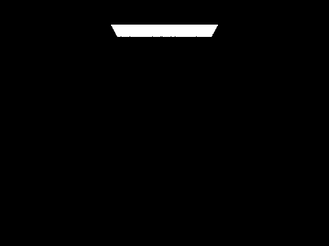max_ray_depth = 0 | 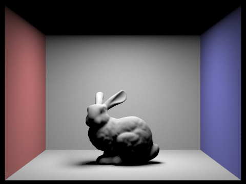max_ray_depth = 1 |
|---|---|
| 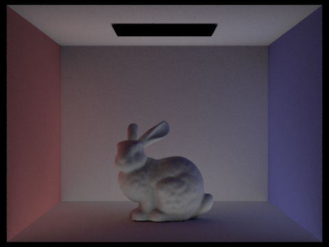max_ray_depth = 2 | 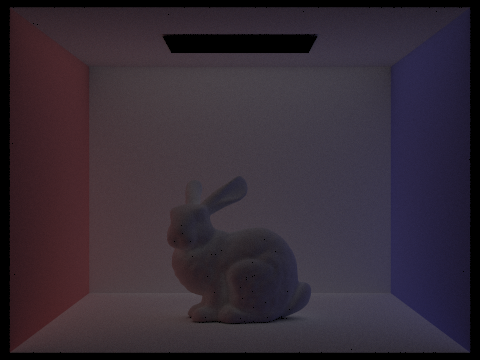max_ray_depth = 3 |
| 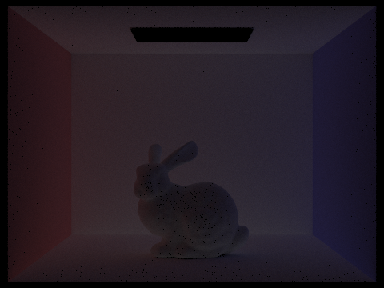max_ray_depth = 4 | 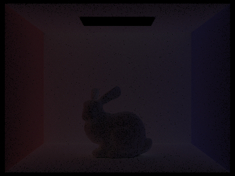max_ray_depth = 5 |
Explaination
The 2nd bounce of light offers the greatest contribution to indirect illumination, comprising rays that have reflected once off the walls or other surfaces and then illuminate the ceiling and shadowed areas, resulting in a brighter appearance under the bunny and on the ceiling. The 3rd bounce of light is significantly weaker due to the loss of energy with each reflection, leading to an overall darker image. In the image from the 3rd bounce, the bunny appears darker while the background is brighter because the light that initially illuminated the rabbit on the 2nd bounce has reflected back onto the walls. The light from adjacent bounces complements each other, creating a more realistic rendering with vivid illumination and detailed shadows.
Compare rendered views with max_ray_depth set to 0, 1, 2, 3, 4, and 5 (without rassian roulette)
| 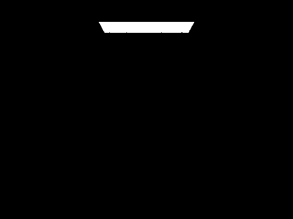max_ray_depth = 0 | max_ray_depth = 1 |
|---|---|
| 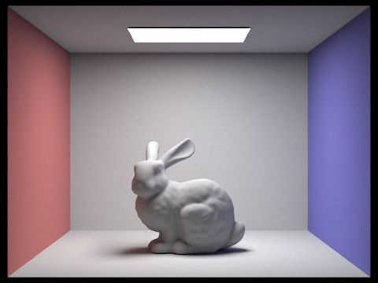max_ray_depth = 2 | max_ray_depth = 3 |
| max_ray_depth = 4 | max_ray_depth = 5 |
Comparison:
As max_ray_depth increases from 0 to 5 in a ray-traced scene, the rendered image transitions from displaying only direct illumination from light sources to incrementally incorporating more complex lighting effects such as reflections, refractions, and diffused ligh. With max_ray_depth = 1, some shadows and possibly very limited reflections appear. At max_ray_depth = 2, we see the first level of indirect illumination, where light has bounced once off surfaces. max_ray_depth = 3 adds a second bounce, revealing subtler indirect lighting and color bleeding. With max_ray_depth set to 4 and 5, the scene quickly converged, meaning that the visual differences between these two settings became negligible. This convergence occurs because the BSDF includes reflection coefficients that cause an exponential decay in energy as the path length increases. Each subsequent bounce contributes less to the overall lighting due to this energy loss, and after several bounces, the additional contribution of light becomes so small that it is imperceptible to the human eye.
Compare rendered views with max_ray_depth set to 0, 1, 2, 3, and 100.
| 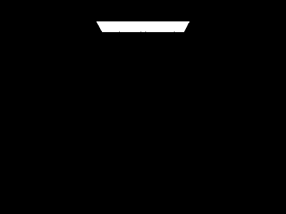max_ray_depth = 0 | max_ray_depth = 1 |
|---|---|
 max_ray_depth = 2 max_ray_depth = 2 | max_ray_depth = 3 |
| max_ray_depth = 4 | max_ray_depth = 100 |
Using rassian roulette gives similar result to above analysis. There's also one more reason to the quick convergence: during process of ray tracing, we terminate a ray with 25% chances, so as the length of the light paths increases, the probability of the paths being terminated grows exponentially, hence the contribution of longer paths is approximately zero. Furthermore, employing Russian roulette provides an unbiased estimate of the lighting, circumventing the issue of the scene being too dark due to a limited number of traced levels.
Pick one scene and compare rendered views with various sample-per-pixel rates, including at least 1, 2, 4, 8, 16, 64, and 1024. Use 4 light rays.
| 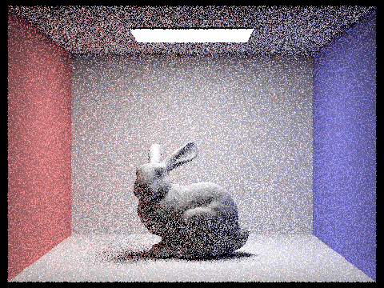1 sample per pixel | 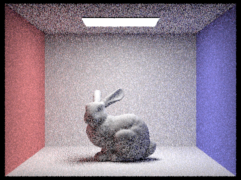2 samples per pixel |
|---|---|
| 4 samples per pixel | 8 samples per pixel |
| 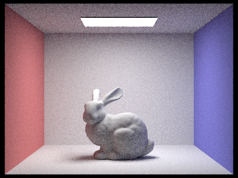16 samples per pixel | 64 samples per pixel |
| 1024 samples per pixel |
With each increase in the sample-per-pixel rate, the rendering algorithm has more information to work with, allowing it to more accurately simulate the complex interplay of light within the scene. This results in progressively higher image quality, though at the cost of increased computational time. The choice of sampling rate thus represents a trade-off between rendering quality and efficiency.
At 1 sample per pixel, the image is likely to exhibit a high level of noise, with the details appearing grainy and undefined. This low sampling rate is insufficient for accurately capturing the complexity of light interactions in the scene.
At 2 samples per pixel, while still noisy, the image begins to show a reduction in variance compared to just 1 sample.
At 4 samples per pixel, the noise continues to decrease, and more details emerge. However, the image might still display noticeable noise, especially in shadowed areas and ceilings.
At 8 and 16 samples per pixel, the quality improves noticeably with each increase. Noise is further reduced, and the rendering captures finer details and subtleties in lighting and texture.
At 64 samples per pixel, the image quality significantly increases, showing much smoother gradients and sharply reduced noise.
At 1024 samples per pixel, the image achieves a very high level of detail with minimal noise.
Part 5: Adaptive Sampling (20 Points)
Explain:
Adaptive sampling is a technique in ray tracing that aims to improve rendering efficiency by allocating more samples to pixels where the image is more complex and fewer samples where the image is simpler. The complexity is determined by the variance within the pixel's sample colors; a high variance indicates complex features like edges or textures, while a low variance suggests flat, simple areas.
Implemention:
The loop starts by taking samples using
ns_aa. For each sample, a ray is generated and traced, and the returned radiance is added tocolor.As rays are sampled, calculate the illumination
L.illum()for each and maintains running sumss1for the mean ands2for the squared values to compute variance.After each batch, compute the mean
muand variancesigma2of the illuminance values. It then calculates the confidence intervalIbased on these statistics.Using the confidence interval
Iand amaxTolerancevalue (which controls how close the running average color must be to the true mean before stopping), the algorithm decides whether the current number of samples is sufficient. If the intervalIis less thanmaxTolerancetimes the meanmu, the loop breaks early, meaning the algorithm has converged to a stable color estimate for that pixel.Once the loop ends, either by reaching convergence or by hitting the maximum number of samples (
ns_aa), the algorithm averages the accumulated color by the actual number of samples taken (index) and updates the pixel color in thesampleBuffer.Finally, the number of samples that were actually used (
num_samples) is recorded in thesampleCountBufferfor each pixel, providing data that could be used for analysis.
Two scenes with at least 2048 samples per pixel.
 Rendered image. Rendered image. | 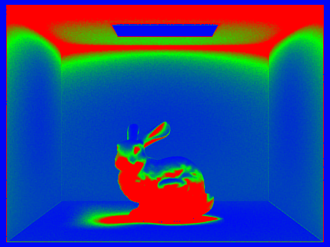Sample rate image |
|---|---|
 Rendered image Rendered image |  Sample rate image Sample rate image |
It can be seen from the sample rate image that those area with shadows and complex geometries will need a higher sample rate to avoid noise.